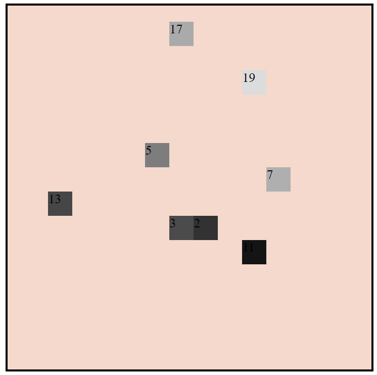

On a un quadrillage qu'on sépare en 4 zones selon x et y, positif ou négatif.
On étudie N et P.
A chaque nouveau nombre, on décolore les pixels.
Autant de pixels que la valeur du nombre.
On procède en diagonale, depuis le centre, du prochain quart de
quadrillage au précédent quart de quadillage.
On remplit d'abord la fin d'une diagonale avant de commencer la suivante.
intérêt : étude des nombres premiers sur une base d'axiome très réduite.
rapide d'étude si pas pertinent
valeur graphique, parfois c'est joli
let's go !!!
première édition : 27/04/23
je trouve finalement mon idée d'hier super cool
je voulais juste me faire la main sur le code
Les algos sont là
faîtes-vous plaisir !!!!
partie explicative :
organisation de P
